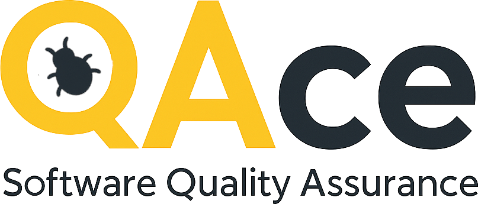

My professional career has always revolved around quality, problem solving and continuous improvement.
Over the years, I have worked in industrial quality control, technical support, software development, database administration and IT operations. Although these roles were different, they all shared a common objective: understanding systems, identifying problems and improving reliability.
One of my earliest experiences with quality processes was participating in ISO 9000 implementation activities within the steel industry. Since then, quality, analysis and troubleshooting have remained constant themes throughout my professional journey.
Today, I am focusing on Quality Assurance as a natural evolution of these experiences.
Quality Assurance combines many of the activities I have always enjoyed: understanding how systems work, identifying risks, investigating failures and helping improve products and processes.
Rather than learning QA only through courses and theory, I decided to build practical experience through real projects, structured testing activities and continuous learning.
To support this journey, I created QAce, a personal project dedicated to software quality and continuous learning.
QAce consists of two complementary initiatives:
A professional portfolio where I document testing activities, test cases, regression testing, defect analysis and future automation initiatives.
A custom-built testing laboratory developed with Vue.js and designed to provide a controlled environment for practicing software testing techniques.
The laboratory allows me to create, execute and document testing activities while continuously improving both my QA and technical skills.
My objective is to continue developing practical QA experience while building a portfolio that demonstrates real testing activities, structured documentation and continuous learning.
Through QAce, I aim to demonstrate not only what I have learned, but also how I approach quality, testing and continuous improvement in practice.
I believe quality is not only about finding bugs. It is about understanding systems, reducing risks and helping teams deliver better software.
Thank you for visiting my portfolio.
If you would like to know more about my professional background and experience, you can download my latest Curriculum Vitae below.
My current CV is available in French. An English version will be added soon.